A reading-record app for conversing with books
Search, save, jot a one-line review, and build a book tower
There is no shortage of reading-record apps, but most treat recording as the goal. The real issue wasn't that logging is tedious — it was that there's no reason to keep doing it.
| Problem | Design decision | Implementation |
|---|---|---|
| Reviewing feels heavy | Shrink the unit to one line | Rating + one sentence + read date, nothing else |
| No reason to continue | A reward loop that visibly accumulates | Book tower — 9 books earned from collected reviews |
| Don't know what to read | Collect taste up front during onboarding | Recommendations by genre · age · gender |
Sign up · Sign in → Taste setup → Tutorial → Home
→ Search → Book detail → Save to shelf / Write a one-line review → Book tower · earn a reward
Taste is collected before the home screen for a reason: without it, a first-time user's home would be empty. Having preferences up front means the very first screen can be filled with recommendations.
A two-person team with one designer. We planned the product together, and I built the entire iOS app single-handedly.
The app's key differentiator, and where most of the design effort went. Not "write a review, get a badge" — a reward curve shaped around drop-off points.
| Step | Book | Reviews (step) | Cumulative |
|---|---|---|---|
| 1 | Folk Tales | 3 | 3 |
| 2 | Aesop's Fables | 5 | 8 |
| 3 | English Book | 10 | 18 |
| 4 | Autobiography | 15 | 33 |
| 5 | Mystery Novel | 20 | 53 |
| 6 | World Atlas | 25 | 78 |
| 7 | Cookbook | 30 | 108 |
| 8 | Space Science | 35 | 143 |
| 9 | Encyclopedia | 40 | 183 |
Drop-off is steepest at the start, so the user experiences success almost immediately.
Once the habit forms, rewards become scarcer to preserve their value.
Folk tales (childhood) → encyclopedia (the sum of knowledge). Each step is a metaphor for reading maturity.
A gradient card and confetti that deliberately overflows the card, so "you made it" reads visually.
A user with zero books earned would open the tower screen and see nothing. If that becomes their first impression, they don't come back. So the zero state got its own screen: a dimmed overlay with a Lottie light animation and a question-mark book — framing it not as "there's nothing here" but as "a space about to be filled."
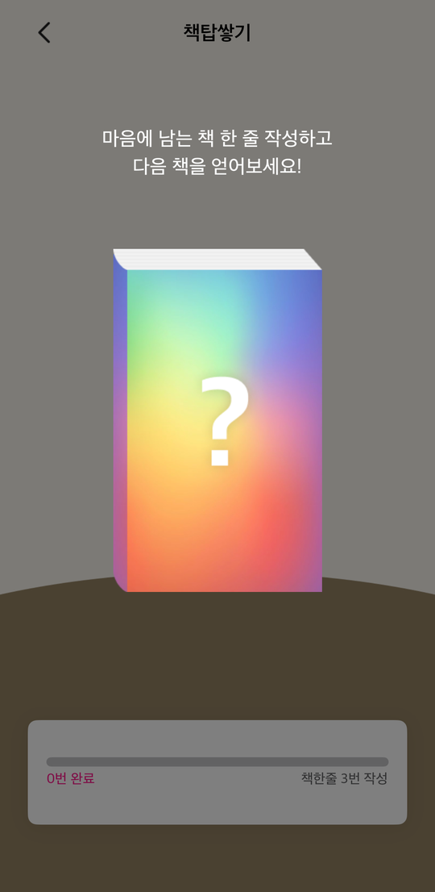
Empty state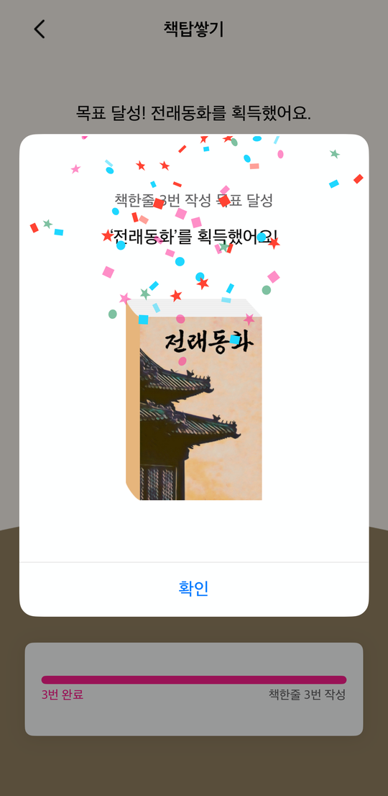
Reward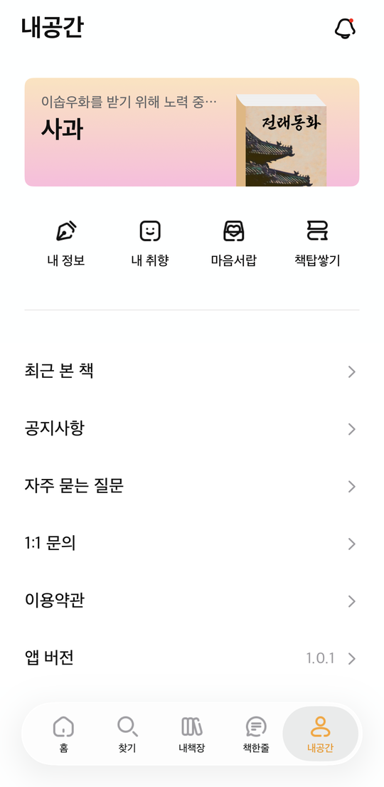
My Space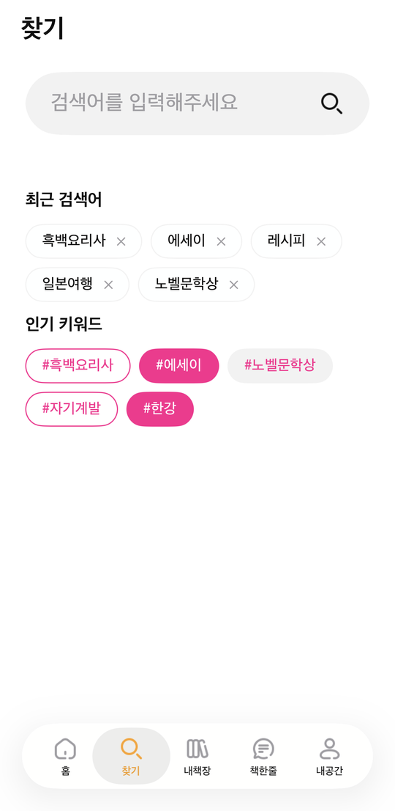
Search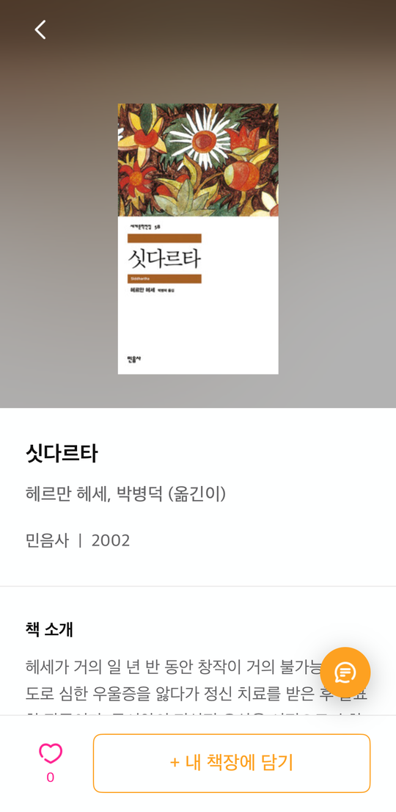
Detail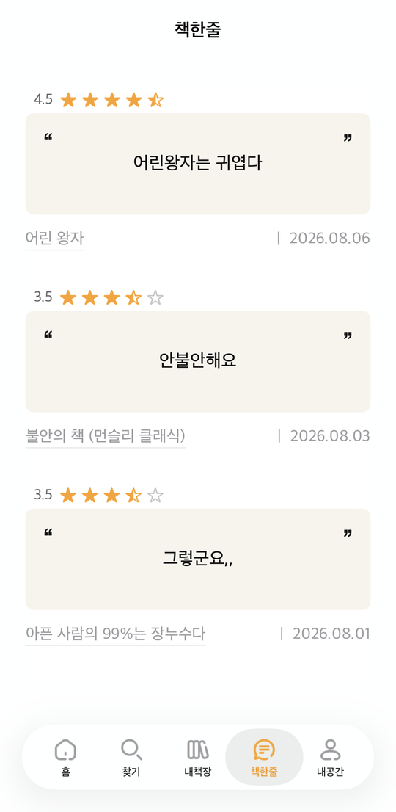
Reviews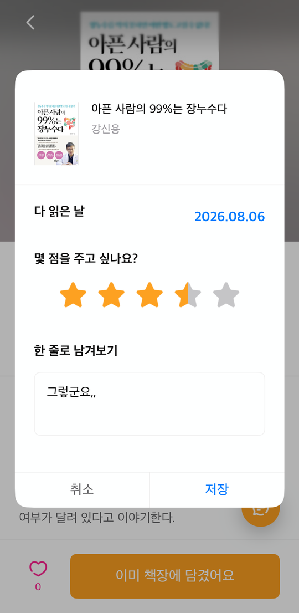
Write a review| Screen | Features |
|---|---|
| Onboarding | Phone-number-based local sign-up, taste collection (genre · age · gender), first-launch tutorial |
| Home | Personalized recommendations / likes ranking / bestsellers · new releases (Aladin) / quote card / pull-to-refresh |
| Search | Aladin search, sort (accuracy · recommended · newest), genre filter, pagination, popular & recent terms, swipe to save |
| Book detail | Aladin book details, like · save to shelf · write a one-line review |
| Shelf | Bookmarked / liked books with genre filter and pagination |
| One-line review | Create · edit · delete, with rating and read date |
| Book tower | 9 reward steps, earn animation + progress gauge + reward popup |
| Notifications | Local push (book earned · reading reminder) + in-app inbox with unread badge; configurable repeat days · times · count |
| My Space | Profile card, my info · preferences · recently viewed · notices/FAQ · inquiry · terms |
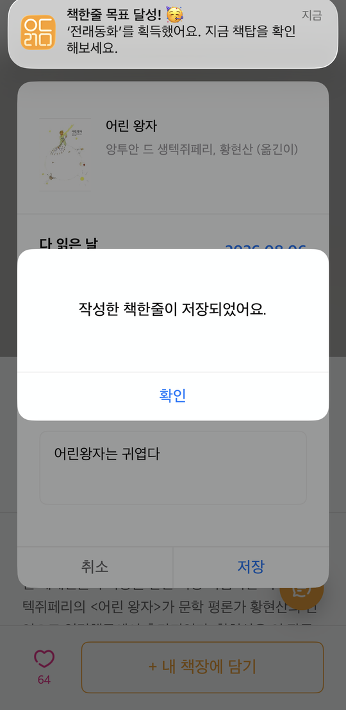
Push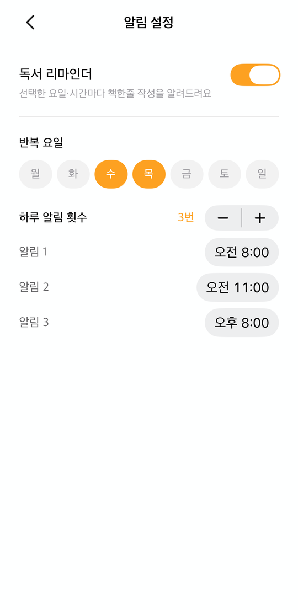
ReminderSaving a one-line review fires a system local push and adds an entry to the in-app inbox. The reminder lets you set repeat days, times, and how many times per day independently.
The loading view is a custom component that only appears once a response exceeds 0.4s (see highlights 2 and 3).
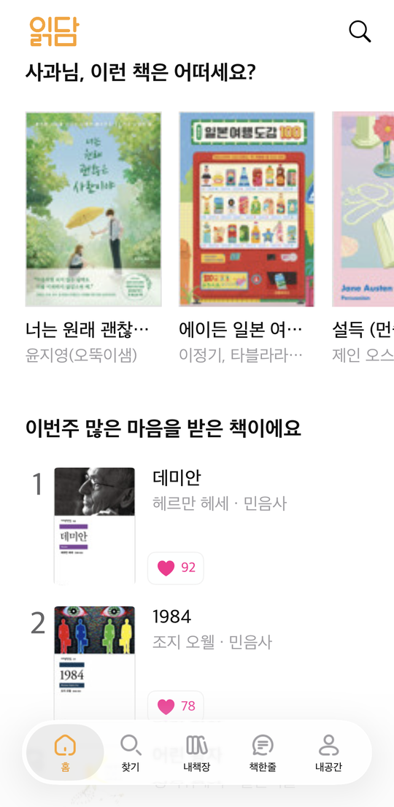
Ranking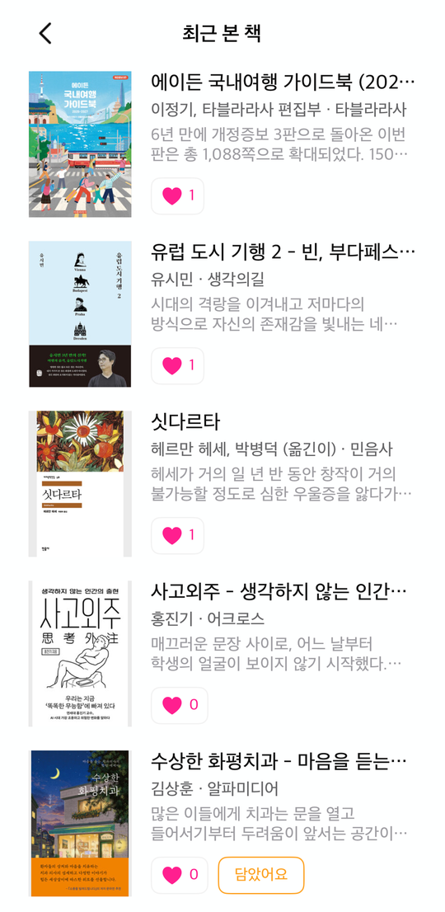
Recently viewed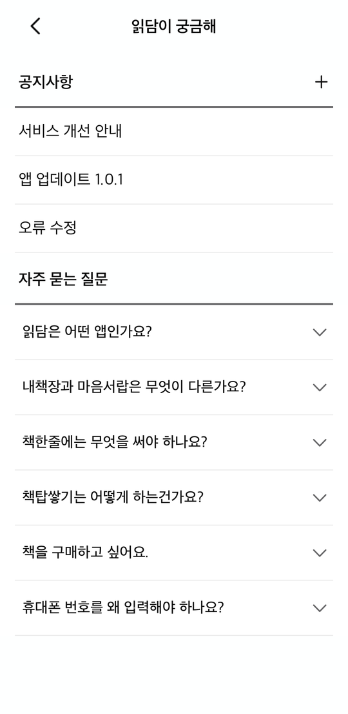
Notices · FAQ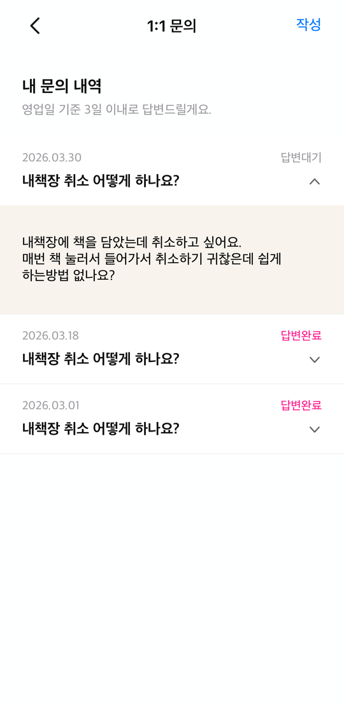
Inquiries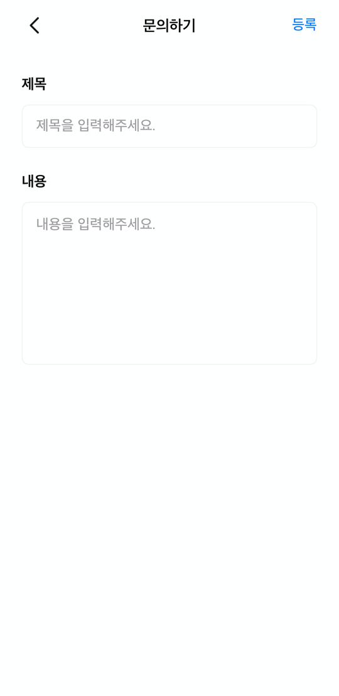
New inquiryMy Space gathers account and preference management alongside support screens. Inquiries track a reply status.
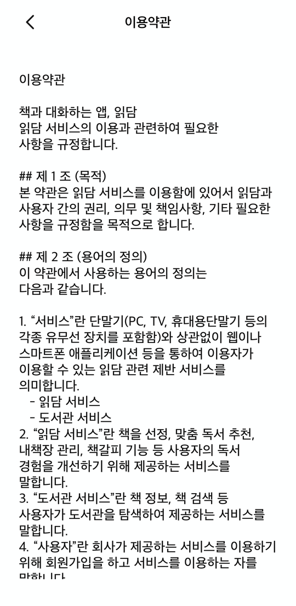
Termsfunc postBookStateChange(name: Notification.Name, isbn13: Int) {
NotificationCenter.default.post(name: name, object: nil,
userInfo: [BookSyncKey.isbn13: isbn13])
}Every mutating function — toggleBookmark, incrementLikeCount,
decrementLikeCount — posts immediately after the CoreData save.
The isbn13 rides along so subscribers refresh just the affected cell.
private let showDelay: TimeInterval = 0.4
private var pendingShow: DispatchWorkItem?
func hideLoading() {
loadingCount = max(0, loadingCount - 1)
guard loadingCount == 0 else { return }
pendingShow?.cancel() // fast response — the spinner never appears
dismissOverlay()
}Screens that fire several requests at once (home loads recommendations + ranking + new releases)
are handled by reference-counting with loadingCount, so the overlay drops
only when the last request finishes.
finishGracefully now completes the stroke
in flight before fading out..symbolEffect(.drawOn) and presented via UIHostingController.
The transition never triggered, and the symbol rendered transparent.imageView.addSymbolEffect(.drawOn) // iOS 26+
// falls back to .variableColor on iOS 17–25Output=JS returns a body with a
trailing semicolon and whitespace, which makes JSONDecoder fail.DataPreprocessor handles it
once, right before decoding.struct AladinJSPreprocessor: DataPreprocessor {
func preprocess(_ data: Data) throws -> Data {
var d = data
let trim: Set<UInt8> = [0x3B, 0x20, 0x09, 0x0A, 0x0D] // ; space tab \n \r
while let last = d.last, trim.contains(last) { d.removeLast() }
return d
}
}var isSetBook: Bool {
if BookData.excludedTitleKeywords.contains(where: { title.contains($0) }) { return true }
return BookData.volumeSetPatterns.contains {
title.range(of: $0, options: .regularExpression) != nil
}
}filteringExcluded() lives on the response model, so every result
passing through the network layer is sanitized automatically.UserDefaults was written without any account scoping.static func scopedKey(_ base: String) -> String {
"\(base)_\(currentAccountUUID?.uuidString ?? "guest")"
}
// CoreData is separated via the Account relationship —
// the current account is always part of the predicate
request.predicate = NSPredicate(format: "isbn13 == %lld AND account == %@",
Int64(isbn13), account)| Category | Technology |
|---|---|
| Language / Pattern | Swift · UIKit · MVC |
| Layout | SnapKit — fully programmatic Auto Layout (no storyboards) |
| Networking | Alamofire |
| Images | Kingfisher (GIF via AnimatedImageView) |
| Animation | Lottie · SF Symbols drawOn/drawOff |
| Local storage | CoreData (Account · Book · Bookmark · Comment · Liked) |
| Notifications | UserNotifications (local push) |
| Open APIs | Aladin Book API (ItemSearch · ItemList · ItemLookUp) |
.gitignore and XOR-obfuscated; only a template file is committedviewContext only, with a thread assertion on saveBuilt as a portfolio demo, the app is local-only on CoreData with no server. Rather than hide that, I chose to state the scope explicitly.
Ten months and 255 commits, from planning through implementation. The biggest lesson was that "the feature works" and "the feature is usable" are different things. The loading spinner worked, but it flickered and made the app feel slower. State was saved correctly, but it didn't propagate between screens, so to the user it looked like a failure. Neither was a functional defect — both were experience defects. Since then I make a habit of re-checking finished work from the user's point of view, not just verifying that the code runs.